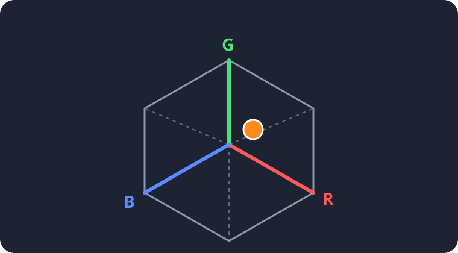

Три кольори, три піни, числа від 0 до 255. Покрути фейдери й побач, як із них народжується будь-який колір.
RGB-світлодіод має чотири ніжки: червоний (R), зелений (G), синій (B) і спільний вивід. У нашому комплекті спільний катод: найдовша ніжка йде на GND.
R → пін 6, G → пін 3, B → пін 5. На кожен канал ставиш свій резистор 220 Ом, щоб не перевантажити діод і пін плати.
analogWrite(пін, 0..255): 0 — вимкнено, 255 — на повну. Працює лише на пінах із позначкою ~: 3, 5, 6, 9, 10, 11.
Пін уміє тільки «є напруга» чи «немає». ШІМ (широтно-імпульсна модуляція) вмикає й вимикає його дуже швидко, а частку періоду, коли він увімкнений, називають коефіцієнтом заповнення. Для 128 із 255 це приблизно 50 %. Око не помічає мерехтіння вище ~50 Гц, тож бачить середню яскравість.
Рухай фейдери: зразок, скетч, смужки ШІМ і кулька в кубі змінюються разом.
Кожен колір — точка в кубі: три осі R, G, B. Натисни «Обертати», щоб куб повернувся.
Завантажується сцена або її доступний текстовий опис.

Це самостійне завдання з лабораторної 3. Поверни фейдери на вкладці «Змішувач» і перевір тут. Допуск — ±40 на кожен канал.
Світлодіод блимає з частотою вище 50 Гц. Яким він здається за такого коефіцієнта заповнення?